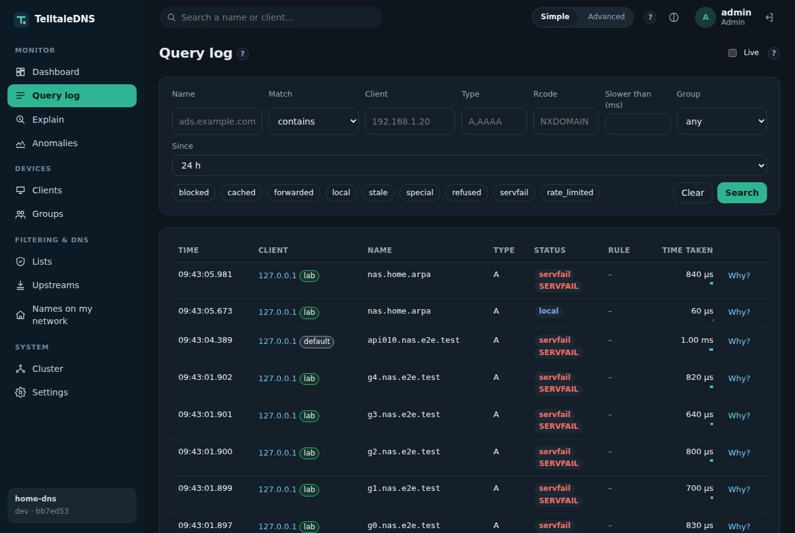
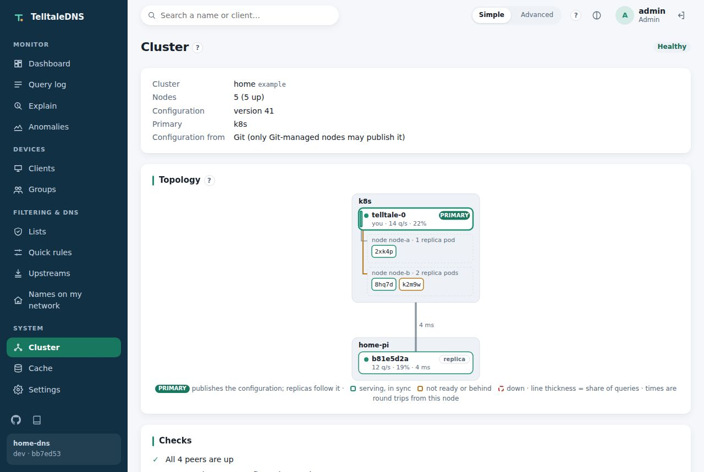

See every question.
Answer on your terms.
Every app, TV, and gadget on your network starts with a DNS lookup. TelltaleDNS answers them in microseconds, blocks what you don't want, and shows you exactly who asked what.
Why TelltaleDNS
Four promises
See
Every question is tied to a device, explained (why it was blocked or allowed), and timed step by step.
Decide
Your rules, per device or group: block ads, trackers, or whole services, on a schedule if you like.
Never fail
Keeps answering from what it knows, even when upstream servers or its own control plane are down.
Run anywhere
The same tiny program on a $35 Raspberry Pi, in Kubernetes, or both at once as one system.
Standing on the shoulders of giants
Inspired by Pi-hole and Technitium
TelltaleDNS exists because two projects showed what self-hosted DNS can be. We're grateful to both communities, and if either one already serves you well, keep using it.
Pi-hole
Brought network-wide ad blocking to millions of homes, on a $35 computer, with a dashboard anyone can read. Its blocklist formats, regex rules and Teleporter export are a shared language, and TelltaleDNS reads them as they are.
Technitium DNS Server
Showed how complete a self-hosted DNS server can be: encrypted DNS, real zones, and a capable web console. Its API makes bringing a setup across to TelltaleDNS straightforward.
TelltaleDNS is an independent, clean-room project under Apache-2.0 OR MIT: it uses their public documentation and data formats, not their code.
Where we put our focus
What TelltaleDNS is built around
✓ available now◐ partly done
| Every CPU core answering, with no pauses | ✓ |
|---|---|
| "Why was this blocked?" down to the list and line | ✓ |
| Per-question timing and percentiles, per device | ✓ |
| Per-network rules: each VLAN or device group gets its own lists, schedules, safe search, and upstream servers: see how | ✓ |
| Encrypted DNS both ways (DoT / DoH), and DNSSEC validation | ✓ |
| Keeps answering when upstreams fail (serve-stale) | ✓ |
| A small footprint: about 85 MB on a Pi 4 with 2.7 million blocked names | ✓ |
| One cluster across a Pi and Kubernetes, managed from any node | ✓ |
| Prometheus metrics and a Grafana dashboard built in | ✓ |
| Safe AI-agent access (scoped tokens or SSO; MCP changes as plans you can approve): see how | ✓ |
| Easy to try: imports a Pi-hole or Technitium setup | ✓ |
Throughput numbers come only from the project's reproducible benchmark (Performance). How it all fits together is on the For nerds page.
The web UI
Built into the binary
A dashboard, a searchable query log with a "Why?" on every row, devices and groups, lists, upstreams, local names, and the cluster, in light or dark, on a desktop or a phone. Take the tour →



Fast by design
Measured in nanoseconds
Answers come from a cache that stores finished replies and only patches the parts that change. No garbage collector, no pauses, and every core works independently.